Member Search

|

This article covers the so-called "min-cost flow" problem, which has many applications for both TopCoder competitors and professional programmers. The article is targeted to readers who are not familiar with the subject, with a focus more on providing a general understanding of the ideas involved rather than heavy theory or technical details; for a more in-depth look at this topic, check out the references at the end of this article, in particular [1]. In addition, readers of this article should be familiar with the basic concepts of graph theory -- including shortest paths [4], paths with negative cost arcs, negative cycles [1] -- and maximum flow theory's basic algorithms [3].
The article is divided into three parts. In Part 1, we'll look at the problem itself. The next part will describe three basic algorithms, and Part 3 some applications to the problem will be covered in Part 3.
Statement of the Problem
What is the minimum cost flow problem? Let's begin with some important terminology.
Let 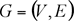 be a directed network defined by a set V of vertexes (nodes) and set E of edges (arcs). For each edge 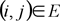 we associate a capacity uij that denotes the maximum amount that can flow on the edge. Each edge also has an associated cost cij that denotes the cost per unit flow on that edge.
We associate with each vertex a number bi. This value represents supply/demand of the vertex. If bi > 0, node i is a supply node; if bi < 0, node i is a demand node (its demand is equal to -bi). We call vertex i a transshipment if bi is zero.
For simplification, let's call G a transportation network and write 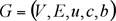 in case we want to show all the network parameters explicitly.
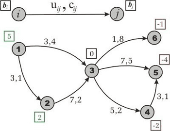
Figure 1. An example of the transportation network. In this we have 2 supply vertexes (with supply values 5 and 2), 3 demand vertexes (with demand values 1, 4 and 2), and 1 transshipment node. Each edge has two numbers, capacity and cost, divided by comma.
Representing the flow on arc by xij, we can obtain the optimization model for the minimum cost flow problem:
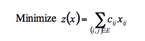
subject to
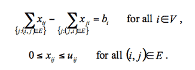
The first constraint states that the total outflow of a node minus the total inflow of the node must be equal to mass balance (supply/demand value) of this node. This is known as the mass balance constraints. Next, the flow bound constraints model physical capacities or restrictions imposed on the flow's range. As you can see, this optimization model describes a typical relationship between warehouses and shops, for example, in a case where we have only one kind of product. We need to satisfy the demand of each shop by transferring goods from the subset of warehouses, while minimizing the expenses on transportation.
This problem could be solved using simplex-method, but in this article we concentrate on some other ideas related to network flow theory. Before we move on to the three basic algorithms used to solve the minimum cost flow problem, let's review the necessary theoretical base.
Finding a solution
When does the minimum cost flow problem have a feasible (though not
necessarily optimal) solution? How do we determine whether it is
possible to translate the goods or not?
If 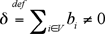 then the problem has no solution, because either the supply or the demand dominates in the network and the mass balance constraints come into play.
We can easily avoid this situation, however, if we add a special node r with the supply/demand value 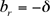. Now we have two options: If (supply dominates) then for each node with bi > 0 we add an arc 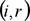 with infinite capacity and zero cost; otherwise (demand dominates), for each node with bi < 0, we add an arc 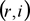 with the same properties. Now we have a new network with 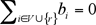 -- and it is easy to prove that this network has the same optimal value as the objective function.
Consider the vertex r as a rubbish or scrap dump. If the shops demand is less than what the warehouse supplies, then we have to eject the useless goods as rubbish. Otherwise, we take the missing goods from the dump. This would be considered shady in real life, of course, but for our purposes it is very convenient. Keep in mind that, in this case, we cannot say what exactly the "solution" of the corrected (with scrap) problem is. And it is up to the reader how to classify the emergency uses of the "dump." For example, we can suggest that goods remain in the warehouses or some of the shop's demands remain unsatisfied.
Even if we have we are not sure that the edge's capacities allow us to transfer enough flow from supply vertexes to demand ones. To determine if the network has a feasible flow, we want to find any transfer way what will satisfy all the problem's constraints. Of course, this feasible solution is not necessarily optimal, but if it is absent we cannot solve the problem.
Let us introduce a source node s and a sink node t. For each node with bi > 0, we add a source arc 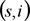 to G with capacity bi and cost 0. For each node with bi < 0, we add a sink arc 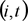 to G with capacity -bi and cost 0.
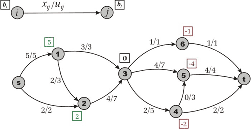
Figure 2. Maximum flow in the transformed network. For simplicity we are ignoring the costs.
The new network is called a transformed network. Next, we solve a maximum flow problem from s to t (ignoring costs, see fig.2). If the maximum flow saturates all the source and sink arcs, then the problem has a feasible solution; otherwise, it is infeasible. As for why this approach works, we'll leave its proof to the reader.
Having found a maximum flow, we can now remove source, sink, and all adjacent arcs and obtain a feasible flow in G. How do we detect whether the flow is optimal or not? Does this flow minimize costs of the objective function z? We usually verify "optimality conditions" for the answer to these questions, but let us put them on hold for a moment and discuss some assumptions.
Now, suppose that we have a network that has a feasible solution. Does it have an optimal solution? If our network contains the negative cost cycle of infinite capacity then the objective function will be unbounded. However, in some tasks, we are able to assign finite capacity to each uncapacitated edge escaping such a situation.
So, from the theoretical point of view, for any minimum cost flow problem we have to check some conditions: The supply/demand balance, the existence of a feasible solution, and the last situation with uncapacitated negative cycles. These are necessary conditions for resolving the problem. But from the practical point of view, we can check the conditions while the solution is being found.
Assumptions
In understanding the basics of network flow theory it helps to make some
assumptions, although sometimes they can lead to a loss of generality.
Of course, we could solve the problems without these assumptions, but
the solutions would rapidly become too complex. Fortunately, these
assumptions are not as restrictive as they might seem.
Assumption 1. All data (uij, cij, bi) are integral.
As we have to deal with a computer, which works with rational numbers,
this assumption is not restrictive in practice. We can convert rational
numbers to integers by multiplying by a suitable large number.
Assumption 2. The network is directed.
If the network were undirected we would transform it into a directed
one. Unfortunately, this transformation requires the edge's cost to be
nonnegative. Let's validate this assumption.
To transform an undirected case to a directed one, we replace each undirected edge connecting vertexes i and j by two directed edges 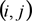 and 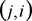, both with the capacity and cost of the replaced arc. To establish the correctness of this transformation, first we note that for undirected arc we have constraint 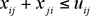 and the term 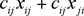 in the objective function. Given that 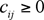 we see that in some optimal solution either xij or xji will be zero. We call such a solution non-overlapping. Now it is easy to make sure (and we leave it to the reader) that every non-overlapping flow in the original network has an associated flow in the transformed network with the same cost, and vise versa.
Assumption 3. All costs associated with edges are nonnegative.
This assumption imposes a loss of generality. We will show below that if
a network with negative costs had no negative cycle it would be
possible to transform it into one with nonnegative costs. However, one
of the algorithms (namely cycle-canceling algorithm) which we are going
to discuss is able to work without this assumption.
For each vertex let's denote by  a number associated with the vertex and call it the potential of node i. Next define the reduced cost of an edge as
a number associated with the vertex and call it the potential of node i. Next define the reduced cost of an edge as
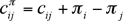
How does our objective value change? Let's denote reduced value by 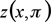. Evidently, if , then
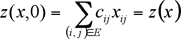
For other values of  we obtain following result:
we obtain following result:
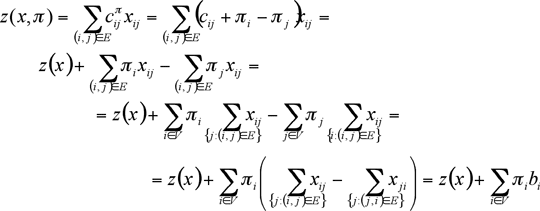
For a fixed , the difference 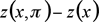 is constant. Therefore, a flow that minimizes also minimizes z(x) and vice versa. We have proved:
Theorem 1. For any node potential the minimum cost flow problems with edge costs cij or have the same optimal solutions. Moreover,
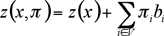
The following result contains very useful properties of reduced costs.
Theorem 2. Let G be a transportation network. Suppose P is a directed path from to  . Then for any node potential
. Then for any node potential
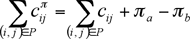
Suppose W is a directed cycle. Then for any node potential
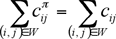
This theorem implies the following reasoning. Let's introduce a vertex s and for each node , we add an arc to G with some positive capacity and zero cost. Suppose that for each number denotes length of the shortest path from s to i with respect to cost function c. (Reminder: there is no negative length cycle). If so, one can justify (or read it in [2]) that for each the shortest path optimality condition is satisfied:
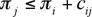
Since, and 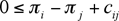 yields 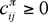. Moreover, applying theorem 2, we can note that if G contains negative cycle, it will be negative for any node potential
in reduced network. So, if the transportation network has no negative
cycle, we will be able to reduce costs and make them positive by finding
the shortest paths from the introduced vertex s,
otherwise, our assumption doesn't work. If the reader asks how to find
the shortest path in graph with negative costs, I'll refer you back to
the basics of the graph theory. One can use Bellman-Ford
(label-correcting) algorithm to achieve this goal [1, 2].
Remember this reduced cost technique, since it appears in many applications and other algorithms (for example, Johnson's algorithm for all pair shortest path in sparse networks uses it [2]).
Assumption 4. The supply/demand at the vertexes satisfy the condition 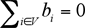 and the minimum cost flow problem has a feasible solution.
This assumption is a consequence of the "Finding a Solution" section of this article. If the network doesn't satisfy the first part of this assumption, we can either say that the problem has no solution or make corresponding transformation according to the steps outlined in that section. If the second part of the assumption isn't met then the solution doesn't exist.
By making these assumptions we do transform our original transportation network. However, many problems are often given in such a way which satisfies all the assumptions.
Now that all the preparations are behind us, we can start to discuss the algorithms in Part 2.
References
[1] Ravindra K. Ahuja, Thomas L. Magnanti, and James B. Orlin. Network Flows: Theory, Algorithms, and Applications.
[2] Thomas H. Cormen, Charles E. Leiserson, Ronald L. Rivest. Introduction to Algorithms.
[3] _efer_. Algorithm Tutorial: Maximum Flow.
[4] gladius. Algorithm Tutorial: Introduction to graphs and their data structures: Section 3.